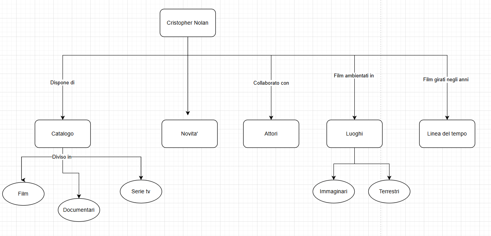
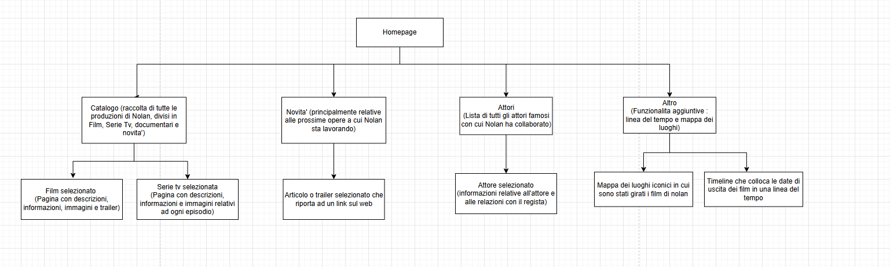

Indice
1. Idea (Abstract)
Il progetto si propone di realizzare una collezione digitale interattiva dedicata ai film di Christopher Nolan, offrendo un'esperienza di esplorazione approfondita e intuitiva. L’obiettivo principale è fornire un archivio strutturato in cui gli utenti possano scoprire dettagli sui film, esplorare i luoghi di ripresa e seguire l'evoluzione della carriera di Nolan attraverso una linea temporale interattiva.
2. Brief
2.1 Finalità
Questo progetto nasce con l'obiettivo di creare una collezione digitale interattiva dedicata ai film di Christopher Nolan, offrendo agli utenti un’esperienza immersiva e approfondita. La piattaforma permetterà di navigare tra le opere del regista, accedendo a informazioni dettagliate su trama, cast, tecniche di regia e impatto culturale. Sarà possibile esplorare i luoghi di ripresa tramite una mappa interattiva, che localizza le principali scene girate nel mondo, e seguire la linea temporale della sua carriera per comprendere l’evoluzione del suo stile. Per facilitare l’esplorazione dei contenuti, la piattaforma offrirà un sistema avanzato di navigazione e filtraggio che consentirà agli utenti di cercare film in base all’anno di uscita, agli attori e alle location utilizzate.
2.2 Pubblico
Il sito è pensato per un pubblico eterogeneo, con particolare attenzione agli appassionati di cinema che vogliono approfondire la filmografia di Christopher Nolan, ai studenti e studiosi interessati ad analizzare la regia, la sceneggiatura e le tecniche cinematografiche, ai curiosi e viaggiatori desiderosi di esplorare le location in cui sono stati girati i film e ai collezionisti e fan alla ricerca di una risorsa completa per catalogare le opere del regista. Gli utenti potranno accedere liberamente alla piattaforma per consultare i contenuti.
2.3 Accesso
La piattaforma sarà progettata per garantire un’esperienza fluida e accessibile su qualsiasi dispositivo, che si tratti di computer, smartphone o tablet. Grazie all’utilizzo di un design responsivo basato su Bootstrap, il layout si adatterà automaticamente alle diverse dimensioni dello schermo, assicurando una navigazione chiara e intuitiva. Per mantenere prestazioni elevate, il sito sarà ottimizzato per garantire tempi di caricamento rapidi anche in presenza di immagini e contenuti multimediali. L’accessibilità sarà una priorità, con un’interfaccia pensata per facilitare l’interazione e rendere la piattaforma fruibile anche agli utenti meno esperti.
2.4 Contenuti e dati
La collezione digitale presenterà una vasta raccolta di contenuti multimediali, con schede dettagliate per ogni film che includeranno informazioni su cast, produzione, trama, tecniche di ripresa e impatto culturale. Saranno disponibili immagini ottimizzate tratte dalle pellicole, poster ufficiali e fotografie di backstage, mentre una mappa interattiva dei luoghi di ripresa fornirà coordinate precise e descrizioni delle scene girate. Un altro elemento chiave del progetto sarà la timeline interattiva, che mostrerà l’evoluzione della carriera di Nolan e le uscite dei suoi film. Inoltre, sarà presente una sezione dedicata al regista, con approfondimenti sulla sua visione artistica, il suo metodo di lavoro e i suoi collaboratori più frequenti.
3. Benchmark
3.1 Analisi di mercato
Attualmente esistono diverse piattaforme online dedicate al cinema e ai registi, ma poche offrono un'esperienza completa e interattiva focalizzata interamente sulla filmografia di Christopher Nolan. La maggior parte dei siti si limita a presentare schede filmografiche statiche, recensioni o approfondimenti critici senza fornire strumenti di navigazione avanzati che permettano un'esplorazione più coinvolgente e approfondita. Un'altra limitazione comune è la mancanza di un sistema di browsing innovativo, che permetta agli utenti di filtrare e analizzare i film in base a criteri personalizzati come le location di ripresa, le tematiche ricorrenti o le collaborazioni più frequenti del regista. Inoltre, la navigazione su molti di questi siti risulta frammentata e spesso poco intuitiva, rendendo difficile un'esperienza immersiva per l’utente. Il progetto si propone di colmare queste lacune offrendo una piattaforma moderna e interattiva, che riunisca in un unico spazio tutti gli elementi della cinematografia di Nolan. Grazie a un'interfaccia intuitiva e strumenti interattivi come una mappa delle location e una timeline dinamica, il sito offrirà un'esperienza esplorativa unica, pensata per cinema lovers, studiosi e curiosi.
3.2 Descrizione dei concorrenti
-
IMDb - Christopher Nolan Page
https://www.imdb.com/name/nm0634240/
Descrizione: IMDb offre una pagina dedicata a Christopher Nolan con informazioni sui suoi film, il cast e alcuni dati tecnici di produzione. Sono presenti recensioni degli utenti e una sezione con le curiosità sui suoi lavori. Punti di forza: Database estremamente ricco, aggiornamenti costanti e sistema di rating basato sulle recensioni degli utenti. Limiti: Interfaccia generica, assenza di strumenti avanzati di navigazione per esplorare connessioni tra i film, location o tematiche ricorrenti.
-
The Christopher Nolan Wiki
https://christophernolan.fandom.com/wiki/Christopher_Nolan_Wiki
Descrizione: Una piattaforma collaborativa in stile wiki, che raccoglie informazioni dettagliate sulla carriera di Nolan, i suoi film e i suoi collaboratori. Punti di forza: Grande quantità di informazioni, aggiornamenti frequenti e struttura enciclopedica. Limiti: Struttura testuale che non facilita un'esplorazione fluida, mancanza di interattività e strumenti di browsing avanzati.
-
The Locations Guide - Nolan’s Films
https://www.thelocationsguide.com
Descrizione: Un sito che raccoglie informazioni sulle location cinematografiche, inclusi alcuni film di Nolan, con mappe e immagini delle riprese. Punti di forza: Approfondimenti dettagliati sulle location di ripresa e mappe geolocalizzate. Limiti: Copertura limitata ai luoghi di ripresa, senza approfondimenti su trama, cast o analisi critica delle opere.
4. Struttura
4.1 Mappa concettuale
Il progetto ha l’obiettivo di rappresentare in modo strutturato e approfondito l’universo cinematografico di Christopher Nolan, esplorandolo attraverso diversi aspetti fondamentali della sua carriera. Uno dei fulcri principali è il Catalogo, che raccoglie tutte le opere del regista, suddivise in Film, Serie TV e Documentari, offrendo così una visione completa e organizzata della sua produzione. Particolare attenzione viene dedicata anche alle Novità, che permettono di restare aggiornati sui progetti più recenti e futuri del regista. Un altro elemento chiave riguarda gli Attori con cui Nolan ha collaborato, evidenziando le figure ricorrenti e il loro impatto nella costruzione dell’identità stilistica e narrativa dei suoi lavori. L’ambientazione è un aspetto cruciale del cinema di Nolan, motivo per cui i Luoghi sono classificati in due categorie: Immaginari, come i mondi costruiti in opere come Inception o Interstellar, e Terrestri, ovvero ambientazioni reali scelte con cura per rafforzare il contesto delle narrazioni. Infine, la Linea del tempo consente di collocare i film girati negli anni, offrendo una prospettiva evolutiva sulla filmografia del regista, con particolare attenzione ai cambiamenti stilistici, narrativi e tematici nel corso del tempo. Questa mappa concettuale aggiornata fornisce una visione integrata del lavoro di Christopher Nolan, facilitando l’analisi della sua produzione artistica, delle collaborazioni, degli scenari narrativi e della sua evoluzione cinematografica.
4.2 Schema Dipendenze
-
Il progetto è strutturato intorno a una Homepage, che rappresenta il punto di accesso principale al sito e consente una navigazione semplice e immediata verso le tre macro-sezioni principali: Catalogo, Attori e Altro.
Catalogo
È la sezione più ricca, dedicata alla raccolta completa delle opere di Christopher Nolan, suddivise in Film, Serie TV, Documentari e Novità. Ogni contenuto selezionato porta a una pagina dedicata che include descrizioni dettagliate, informazioni tecniche, immagini promozionali e trailer. Le Novità si concentrano soprattutto sui progetti futuri o in fase di sviluppo, fornendo articoli o trailer aggiornati, spesso accompagnati da link esterni per ulteriori approfondimenti.
Attori
Questa sezione propone una lista degli attori più noti che hanno collaborato con Nolan. Selezionando un attore, si accede a una scheda personale contenente informazioni biografiche, i ruoli interpretati nei film del regista e dettagli sul rapporto professionale tra l’attore e il regista.
Altro
In questa sezione si trovano funzionalità extra che arricchiscono l’esperienza dell’utente:
- Una Mappa interattiva dei luoghi iconici in cui sono stati girati i film, utile per esplorare l’aspetto geografico e scenografico dell’opera di Nolan.
- Una Linea del tempo che colloca le date di uscita dei film in ordine cronologico, permettendo all’utente di osservare l’evoluzione stilistica e narrativa del regista nel corso degli anni.
4.3 Categorie descrittive
- Titolo: The Prestige
- Regista: Christopher Nolan
- Anno di uscita: 2006
- Cast principale: Christian Bale, Hugh Jackman, Scarlett Johansson
- Genere: Drammatico, Thriller, Fantascienza
- Durata: 130 minuti
- Lingua originale: Inglese
- Produzione: Touchstone Pictures, Warner Bros.
- Distribuzione: Warner Bros. Pictures
- Colonna sonora: David Julyan
- Trailer ufficiale: YouTube - The Prestige
- Pubblico consigliato: Dai 14 anni in su
- Trama:
Nell’Inghilterra vittoriana, due giovani illusionisti, Robert Angier e Alfred Borden, iniziano la loro carriera come amici e collaboratori, ma un tragico incidente li trasforma in acerrimi rivali. Ossessionati dal desiderio di superarsi a vicenda, i due maghi intraprendono una battaglia fatta di inganni, sabotaggi e sacrifici estremi. Quando Borden presenta il suo straordinario trucco, Il Trasporto Umano, Angier diventa ossessionato nel cercare di svelarne il segreto. La sua ricerca lo conduce fino al misterioso scienziato Nikola Tesla, il cui esperimento rivoluzionario potrebbe cambiare per sempre il mondo della magia… e la vita stessa. The Prestige esplora i limiti dell’ambizione, il prezzo dell’ossessione e il confine tra realtà e illusione, portando i protagonisti verso un finale sconvolgente.
6. Usabilità
6.1 Norme di usabilità per l'architettura
Il sito è strutturato in modo semplice e intuitivo. La navbar, posizionata in alto, consente un accesso rapido alle sezioni principali (Home, Attori, Catalogo, ecc.), anche se non è fissa (sticky): questo significa che scompare durante lo scroll, ma la struttura lineare del sito e la presenza di breadcrumbs nelle pagine interne garantiscono comunque un buon orientamento per l’utente. Il layout, basato su Bootstrap, è responsivo e si adatta perfettamente a dispositivi di diverse dimensioni, assicurando un'esperienza coerente sia su desktop che su mobile. Le sezioni sono ben suddivise e facilmente scansionabili, contribuendo a un'esperienza di navigazione fluida.
6.2 Norme di usabilità per l'aspetto e la tipografia
Il sito utilizza due font principali: Roboto per il corpo del testo, scelto per la sua leggibilità; Poppins per i titoli delle schede film, con un tocco moderno e cinematografico. Il testo bianco su sfondo nero garantisce un contrasto elevato e quindi un'ottima leggibilità. Le intestazioni usano un tono antiquewhite, ben visibile ma non invasivo. Le dimensioni dei caratteri sono proporzionate, e l’allineamento centrale o giustificato dei contenuti principali aiuta la lettura. Gli effetti hover su link e pulsanti migliorano l’interazione, fornendo un chiaro feedback visivo all’utente.
6.3 Norme di usabilità per colori, font e icone
La palette cromatica scelta è minimalista ma efficace: nero, bianco, grigio e accenti blu e gialli, in linea con uno stile elegante e sobrio, perfettamente adatto al tema “Christopher Nolan”. Le icone di Bootstrap e Font Awesome sono utilizzate in modo coerente per migliorare la comunicazione visiva e l’accessibilità, ad esempio per evidenziare premi, social e sezioni specifiche.
7. Servizi
7.1 Sistemi di browsing per valorizzare
Il catalogo dei film è progettato per offrire un'esperienza di esplorazione semplice, efficace e visivamente coinvolgente. Gli utenti possono navigare i contenuti grazie a diversi strumenti di browsing: Barra di ricerca: consente di filtrare i film per titolo, facilitando l’accesso immediato alle opere desiderate. Ordinamento dinamico: l’utente può ordinare i film per titolo o per anno di uscita, tramite appositi pulsanti. Navigazione per sezioni: il menu di navigazione offre accesso diretto a sezioni tematiche come Catalogo Film, Attori, Mappa dei Luoghi e Linea del Tempo. Breadcrumbs: inserite nelle sottopagine per aiutare l’utente a comprendere sempre la propria posizione nel sito. Card visive: ogni film è rappresentato con un’immagine, titolo, descrizione breve e anno, in modo da fornire un colpo d’occhio completo e intuitivo.
7.2 Utilities e tool per l’interazione
Per rendere l’esperienza utente più interattiva e coinvolgente, il sito include diversi strumenti e componenti: Pulsanti dinamici: i bottoni (es. ordina, dettagli) cambiano stile al passaggio del mouse, fornendo un chiaro feedback visivo. Card interattive: i film sono mostrati in card che reagiscono all’hover (sfocatura immagine + comparsa del pulsante “Dettagli”). Effetti di transizione: molte componenti (card, bottoni, immagini) includono transizioni fluide che migliorano la percezione dell’interfaccia. Mappa interattiva: per esplorare i luoghi iconici delle riprese cinematografiche di Nolan. Linea del tempo: una sezione cronologica per visualizzare l’evoluzione delle opere nel tempo. Paginazione: utilizzata per gestire in modo ordinato l’elenco dei film nel catalogo, migliorando la performance e l’organizzazione dei contenuti.
7.3 Sviluppi futuri
Il sito è pensato per essere espanso e migliorato con nuove funzionalità che arricchiscano ulteriormente l’esperienza utente. Tra gli sviluppi previsti: Sezione Approfondimenti: contenuti esclusivi su tematiche ricorrenti nei film, spiegazioni dei finali e analisi registiche. Area Curiosità: uno spazio dedicato ai retroscena dei film, aneddoti e connessioni nascoste. Sezione Commenti/Community: possibilità per gli utenti di interagire, commentare i film e scambiarsi opinioni e teorie. Accessibilità migliorata: introduzione di modalità ad alto contrasto e supporto screen reader per utenti con disabilità visive. Integrazione multimediale: trailer, interviste e spezzoni video ufficiali.
8 Bibliografia
Strumenti e risorse utilizzate:
- Mappa interattiva realizzata con leaflet
- Wireframes creati con un ipad
- Mappa concettuale e schema del sito realizzati con Diagrams.net (draw.io)
- Font principale utilizzato: Roboto – Google Fonts
- Codice HTML, CSS e JS sviluppato con Visual Studio Code
- Sito pubblicato con GitHub Pages
Testi e immagini:
- Testi: Tutti i testi sono stati redatti manualmente e si basano su fonti attendibili, tra cui:
- Il sito ufficiale di Christopher Nolan su IMDb
- Articoli da riviste cinematografiche online (Esquire, Variety, The Guardian, ecc.)
- Wikipedia e interviste verificate al regista
- Immagini: Le immagini utilizzate nel sito provengono da fonti pubbliche, ufficiali o promozionali, e rappresentano locandine, frame e personaggi dei film diretti da Christopher Nolan. In caso di immagini promozionali, sono state utilizzate a scopo educativo, non commerciale.
Fonti per layout e progettazione:
- Slide e materiali del corso di Informatica Umanistica della Prof.ssa Francesca Tomasi – Università di Bologna (piattaforma Virtuale)
- Sito di esempio "Progetto Dylan Dog" realizzato da Alessandro Rocchi
- Documentazione ufficiale di Bootstrap e Font Awesome